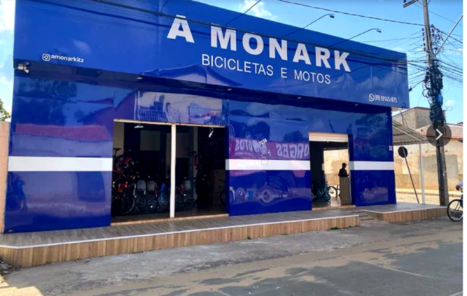
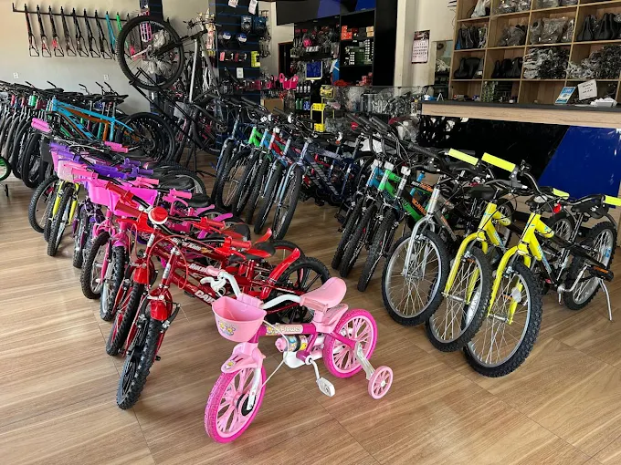

BicicletasInfantis, urbanas e para trilha
Bicicletas · Motos · Oficina
A MONARK
Tudo para sua bike e sua moto em um só lugar
Venda de bicicletas, motos, peças, acessórios e assistência técnica especializada para clientes de Imperatriz e região.
Loja físicaRua João Pessoa, 1238

MotosVenda, peças e equipamentos
OficinaRevisão, regulagem e conserto
AcessóriosCapacetes, luvas e proteção
Sobre a Monark
Experiência local para cuidar da sua bike e da sua moto
A MONARK Bicicletas e Motos atende ciclistas, motociclistas e famílias com venda, manutenção e assistência técnica. Aqui você encontra variedade, orientação na escolha e atendimento próximo em Imperatriz.

Compra + oficina
atendimento completo no mesmo endereço
Produtos em destaque
Escolha o que combina com o seu caminho
Nossa oficina
Serviços para manter tudo funcionando bem
Avaliação direta, orientação clara e cuidado em cada ajuste.
Revisão geral
Checagem dos principais componentes da bicicleta.
Freios
Regulagem e manutenção para uma frenagem segura.
Marchas
Ajustes para trocas precisas e pedalada suave.
Rodas e pneus
Troca, alinhamento e avaliação do conjunto.
Montagem
Preparação e ajustes para o perfil do ciclista.
Lubrificação
Cuidados para preservar corrente e componentes.
Sua bike precisa de atenção?Converse com a equipe e leve para uma avaliação.
Agendar atendimento
Galeria
Um pouco da nossa loja
Onde estamos
Visite a MONARK em Imperatriz
Estamos no Parque Anhanguera com loja, produtos e oficina no mesmo endereço.
EndereçoRua João Pessoa, 1238
Parque Anhanguera, Imperatriz - MA
Parque Anhanguera, Imperatriz - MA
E-maile_b_da_s@yahoo.com.br
Tudo para sua bike e sua moto em um só lugar.
Falar no WhatsApp Responsável: Edilson Borges da Silva